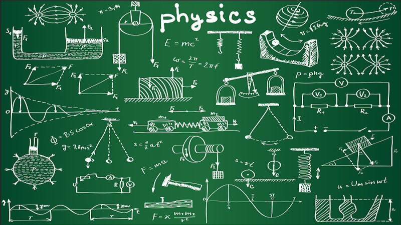

Scifo Scifo
Scifo Scifo 
Physics is the natural science that involves the study of matter and its motion and behavior through space and time, along with related concepts such as energy and force. One of the most fundamental scientific disciplines, the main goal of physics is to understand how the universe behaves.
Physics is one of the oldest academic disciplines, perhaps the oldest through its inclusion of astronomy. Over the last two millennia, physics was a part of natural philosophy along with chemistry, biology, and certain branches of mathematics, but during the scientific revolution in the 17th century, the natural sciences emerged as unique research programs in their own right. Physics intersects with many interdisciplinary areas of research, such as biophysics and quantum chemistry, and the boundaries of physics are not rigidly defined. New ideas in physics often explain the fundamental mechanisms of other sciences while opening new avenues of research in areas such as mathematics and philosophy.
Physics also makes significant contributions through advances in new technologies that arise from theoretical breakthroughs. For example, advances in the understanding of electromagnetism or nuclear physics led directly to the development of new products that have dramatically transformed modern-day society, such as television, computers, domestic appliances, and nuclear weapons; advances in thermodynamics led to the development of industrialization, and advances in mechanics inspired the development of calculus.
Ancient Egyptian astronomy is evident in monuments like the ceiling of Senemut's tomb from the Eighteenth Dynasty of Egypt.
Astronomy is the oldest of the natural sciences. The earliest civilizations dating back to beyond 3000 BCE, such as the Sumerians, ancient Egyptians, and the Indus Valley Civilization, all had a predictive knowledge and a basic understanding of the motions of the Sun, Moon, and stars. The stars and planets were often a target of worship, believed to represent their gods. While the explanations for these phenomena were often unscientific and lacking in evidence, these early observations laid the foundation for later astronomy.
According to Asger Aaboe, the origins of Western astronomy can be found in Mesopotamia, and all Western efforts in the exact sciences are descended from late Babylonian astronomy. Egyptian astronomers left monuments showing knowledge of the constellations and the motions of the celestial bodies, while Greek poet Homer wrote of various celestial objects in his Iliad and Odyssey; later Greek astronomers provided names, which are still used today, for most constellations visible from the northern hemisphere.
Natural Philosophy
Natural philosophy has its origins in Greece during the Archaic period, (650 BCE – 480 BCE), when pre-Socratic philosophers like Thales rejected non-naturalistic explanations for natural phenomena and proclaimed that every event had a natural cause. They proposed ideas verified by reason and observation, and many of their hypotheses proved successful in experiment; for example, atomism was found to be correct approximately 2000 years after it was first proposed by Leucippus and his pupil Democritus.
Classical Physics
Sir Isaac Newton (1643–1727), whose laws of motion and universal gravitation were major milestones in classical physics
Physics became a separate science when early modern Europeans used experimental and quantitative methods to discover what are now considered to be the laws of physics.
Major developments in this period include the replacement of the geocentric model of the solar system with the heliocentric Copernican model, the laws governing the motion of planetary bodies determined by Johannes Kepler between 1609 and 1619, pioneering work on telescopes and observational astronomy by Galileo Galilei in the 16th and 17th Centuries, and Isaac Newton's discovery and unification of the laws of motion and universal gravitation that would come to bear his name. Newton also developed calculus, the mathematical study of change, which provided new mathematical methods for solving physical problems.
The discovery of new laws in thermodynamics, chemistry, and electromagnetics resulted from greater research efforts during the Industrial Revolution as energy needs increased. The laws comprising classical physics remain very widely used for objects on everyday scales travelling at non-relativistic speeds, since they provide a very close approximation in such situations, and theories such as quantum mechanics and the theory of relativity simplify to their classical equivalents at such scales. However, inaccuracies in classical mechanics for very small objects and very high velocities led to the development of modern physics in the 20th century.
Modern physics
Albert Einstein (1879–1955), whose work on the photoelectric effect and the theory of relativity led to a revolution in 20th century physics
Max Planck (1858–1947), the originator of the theory of quantum mechanics
Modern physics began in the early 20th century with the work of Max Planck in quantum theory and Albert Einstein's theory of relativity. Both of these theories came about due to inaccuracies in classical mechanics in certain situations. Classical mechanics predicted a varying speed of light, which could not be resolved with the constant speed predicted by Maxwell's equations of electromagnetism; this discrepancy was corrected by Einstein's theory of special relativity, which replaced classical mechanics for fast-moving bodies and allowed for a constant speed of light. Black body radiation provided another problem for classical physics, which was corrected when Planck proposed that the excitation of material oscillators is possible only in discrete steps proportional to their frequency; this, along with the photoelectric effect and a complete theory predicting discrete energy levels of electron orbitals, led to the theory of quantum mechanics taking over from classical physics at very small scales.
Quantum mechanics would come to be pioneered by Werner Heisenberg, Erwin Schrödinger and Paul Dirac. From this early work, and work in related fields, the Standard Model of particle physics was derived. Following the discovery of a particle with properties consistent with the Higgs boson at CERN in 2012, all fundamental particles predicted by the standard model, and no others, appear to exist; however, physics beyond the Standard Model, with theories such as supersymmetry, is an active area of research. Areas of mathematics in general are important to this field, such as the study of probabilities and groups.
Source: wikipedia.org/Physics